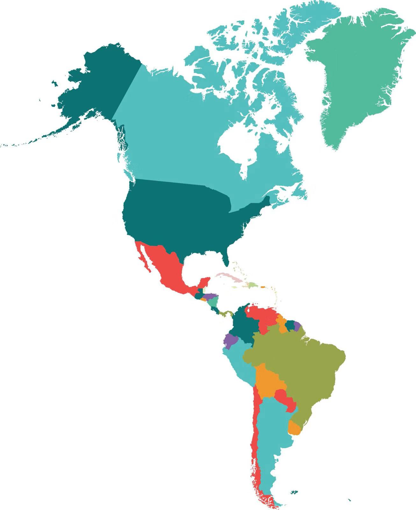

Los Angeles
Culture
Food
Attractions
The endless sandy beaches and bright sunshine,
the famous "Movie Kingdom" Hollywood, the fascinating Disneyland,
and the beautiful Beverly Hills make Los Angeles a world-famous "movie city"
and "tourist city". Tangerines pile up like a mountain.